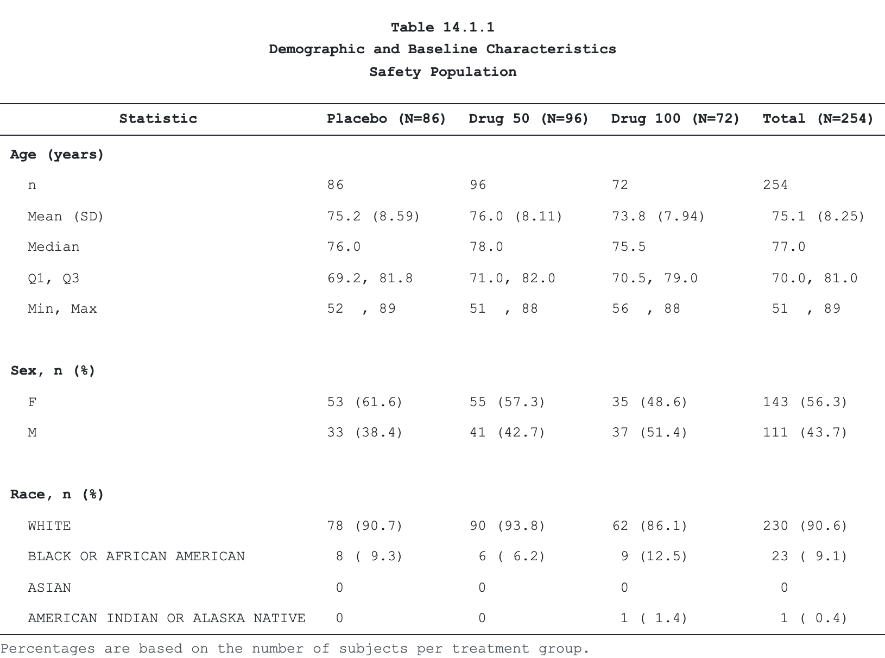

tabular turns a pre-summarised data frame into a submission-grade clinical table and emits it natively to RTF, PDF, HTML, LaTeX, and DOCX — no Java, no LibreOffice, no Word automation. One short pipeline gives you decimal alignment via real font metrics, multi-level column headers, predicate-targeted styling, and group-aware pagination, built for CDISC ADaM workflows and FDA / EMA / PMDA submissions.
It is the only R table package that pairs a live HTML preview with a paginated print deliverable: the same spec you eyeball in a notebook is the one that paginates into the RTF you ship.
Scope.
tabularrenders tables and listings today. Figure (graph) output is not yet supported and is the focus of the next release.
Installation
Install the released version from CRAN:
install.packages("tabular")Or the development version from GitHub:
# install.packages("pak")
pak::pak("vthanik/tabular")
# or
remotes::install_github("vthanik/tabular")R dependencies install automatically. The five backends differ in what else they need:
| Backend | Extra requirement |
|---|---|
| RTF, DOCX, HTML, Markdown | none — pure R, no Java, no pandoc, no Office |
LaTeX (.tex source) |
none — tabular writes the fragment |
a TeX install (xelatex) with tabularray + ninecolors
|
PDF is the only backend that shells out. Install tinytex once per machine and tabular compiles with xelatex thereafter:
install.packages("tinytex")
tinytex::install_tinytex() # one-time TeX setup
tinytex::tlmgr_install(c("tabularray", "ninecolors", "siunitx", "tex-gyre"))check_latex() reports which LaTeX packages are present and prints the exact tlmgr_install() line for anything missing; check_fonts(spec) does the same for the fonts a spec asks for, per backend.
tabular::check_latex() # PDF readiness, with the install remedyTeX Live on a managed OS. If TeX Live came from the system package manager (RHEL
dnf, Debian/Ubuntuapt), itstlmgris usually locked andtlmgr_install()fails on permissions. Install user-space TinyTeX alongside it rather than fighting the system copy — and never reach for--ignore-warningto force it.
A table in one pipeline
The pipeline starts from a pre-summarised wide data frame (one row in = one display row — tabular does no aggregation) and chains one verb per concern. Every verb returns an updated, immutable tabular_spec; the engine resolves it at render time.
library(tabular)
# BigN denominators, keyed by arm
n <- stats::setNames(cdisc_saf_n$n, cdisc_saf_n$arm_short)
# columns render in data-frame order, so put them in dose order first;
# subset to Age / Sex / Race for a compact display
keep <- c("Age (years)", "Sex, n (%)", "Race, n (%)")
demo <- cdisc_saf_demo[
cdisc_saf_demo$variable %in% keep,
c("variable", "stat_label", "placebo", "drug_50", "drug_100", "Total")
]
tab <- tabular(
demo,
titles = c(
"Table 14.1.1",
"Demographic and Baseline Characteristics",
"Safety Population"
),
footnotes = "Percentages are based on the number of subjects per treatment group."
) |>
cols(
variable = col_spec(usage = "group", label = "Characteristic"),
stat_label = col_spec(label = "Statistic"),
placebo = col_spec(
label = "Placebo (N={n['placebo']})",
align = "decimal"
),
drug_50 = col_spec(
label = "Drug 50 (N={n['drug_50']})",
align = "decimal"
),
drug_100 = col_spec(
label = "Drug 100 (N={n['drug_100']})",
align = "decimal"
),
Total = col_spec(label = "Total (N={n['Total']})", align = "decimal")
)
# render to any backend by file extension (or format = "...")
path <- emit(tab, tempfile(fileext = ".rtf")) # submission deliverableThe same tab emits to every backend from the one spec. The table below is tabular’s own HTML render — the identical spec also produces RTF, a paginated PDF, a tabularray LaTeX fragment, and native OOXML .docx:

Why tabular?
-
Five native backends, one spec.
emit()dispatches on the file extension to RTF 1.9.1, PDF (viatinytex), self-contained Bootstrap HTML,tabularrayLaTeX, and native OOXML DOCX. No JVM, no Office round-trip. - Decimal alignment that survives the page. Numbers align on the decimal using the backend’s real font metrics, not guessed padding — so columns stay aligned in print, not just on screen.
- Submission chrome built in. Multi-line titles, up to eleven footnote lines, page header/footer slots, and the four-section page layout regulatory reviewers expect.
-
Auto-numbered footnotes.
footnote()anchors a marker to any cell, header, or title; the engine assigns the glyph once, in reading order, deduped byid, and byte-identical across every backend and page. - Group-aware pagination. Keep a SOC and its preferred terms on one page, repeat titles/headers/footnotes per page, control orphan/widow rows, and split wide tables into horizontal panels.
-
Display-only by design.
tabularstyles and renders; it never filters, aggregates, or weights. Pair it withcards/gtsummary/dplyr/ SAS upstream and feed it a tidy wide frame. -
A QC trail.
emit(data_file = ...)writes the resolved wide data beside the render, and a CDISC ARS audit manifest documents the display.
Where tabular fits
tabular is a renderer for pre-summarised clinical tables, not a statistics engine. Compute the summary upstream — with cards, gtsummary, dplyr, or SAS — then hand the finished wide frame to tabular(). Reach for gtsummary or rtables when you want the package to compute the summary; reach for tabular to render a summary you already have to submission-grade output.
The matrix reflects each package’s documented export surface (verified against their namespaces; via gt means gtsummary renders through gt):
| tabular | gt | rtables | gtsummary | flextable | huxtable | |
|---|---|---|---|---|---|---|
| Computes statistics | — | — | ✓ | ✓ | — | — |
| Live HTML preview | ✓ | ✓ | — | ✓ | ✓ | ✓ |
| Native RTF | ✓ | ✓ | — | via gt | ✓ | ✓ |
| Native DOCX | ✓ | ✓ | — | via gt | ✓ | ✓ |
| LaTeX | ✓ | ✓ | — | via gt | — | ✓ |
| ✓ | ✓ | ✓ | via gt | — | ✓ | |
| Paginated submission output | ✓ | — | ✓ | — | — | — |
| Decimal align via font metrics | ✓ | — | — | — | — | — |
| CDISC ARS audit manifest | ✓ | — | — | — | — | — |
Two notes on the marks:
-
Live HTML preview means the table renders as HTML inline when you print it in a Quarto / R Markdown chunk or the RStudio viewer (a
knit_printmethod).rtablesprints a monospace ASCII table by default and ships noknit_printmethod, so it is—here; it can still emit HTML through an explicitas_html()call. - PDF is compiled through LaTeX, so it needs a TeX installation — see Installation above. Every other backend is pure R.
Documentation
- Get started — the mental model and your first table
-
Data in — turn a cards/cardx ARD into the wide frame with
pivot_across() - Structure — columns, headers, BigN, and pagination
- Presentation — titles, footnotes, page chrome, and styling
- Output & qualification — backends, requirements, and the CDISC-pilot validation
- Reference — every verb, grouped by role